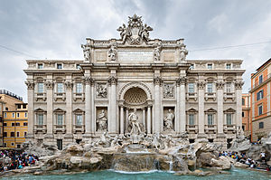
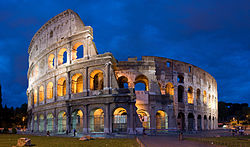

The Trevi Fountain (Italian: Fontana di Trevi) is a fountain in the Trevi district in Rome, Italy, designed by Italian architect Nicola Salvi and completed by Pietro Bracci. Standing 26.3 metres (86 ft) high and 49.15 metres (161.3 ft) wide,[1] it is the largest Baroque fountain in the city and one of the most famous fountains in the world. The fountain has appeared in several notable films, including Federico Fellini's La Dolce Vita.
The fountain at the junction of three roads (tre vie)[2] marks the terminal point[3] of the "modern" Acqua Vergine, the revived Aqua Virgo, one of the aqueducts that supplied water to ancient Rome. In 19 BC, supposedly with the help of a virgin, Roman technicians located a source of pure water some 13 km (8.1 mi) from the city. (This scene is presented on the present fountain's façade.) However, the eventual indirect route of the aqueduct made its length some 22 km (14 mi). This Aqua Virgo led the water into the Baths of Agrippa. It served Rome for more than 400 years.[4]
Legend holds that in 19 BC thirsty Roman soldiers were guided by a young girl to a source of pure water thirteen kilometers from the city of Rome. The discovery of the source led Augustus to commission the construction of a twenty-two kilometer aqueduct leading into the city, which was named Aqua Virgo, or Virgin Waters, in honor of the legendary young girl. The aqueduct served the hot Baths of Agrippa, and Rome, for over four hundred years.

The Colosseum or Coliseum, also known as the Flavian Amphitheatre (/kɒləˈsiːəm/ kol-ə-see-əm; Latin: Amphitheatrum Flavium; Italian: Anfiteatro Flavio [anfiteˈatro ˈflavjo] [äɱːfit̪eˈäːt̪ro ˈfläːvjo] or Colosseo [kolosˈsɛo] [koloˈs̪ːɛːo]), is an elliptical amphitheatre in the centre of the city of Rome, Italy. Built of concrete and stone,[1] it is the largest amphitheatre ever built and is considered one of the greatest works of architecture and engineering.[2]
The Colosseum is situated just east of the Roman Forum. Construction began under the emperor Vespasian in 72 AD,[3] and was completed in 80 AD under his successor and heir Titus.[4] Further modifications were made during the reign of Domitian (81–96).[5] These three emperors are known as the Flavian dynasty, and the amphitheatre was named in Latin for its association with their family name (Flavius).
The Colosseum could hold, it is estimated, between 50,000 and 80,000 spectators,[6][7] and was used for gladiatorial contests and public spectacles such as mock sea battles, animal hunts, executions, re-enactments of famous battles, and dramas based on Classical mythology. The building ceased to be used for entertainment in the early medieval era. It was later reused for such purposes as housing, workshops, quarters for a religious order, a fortress, a quarry, and a Christian shrine.